Zonnepanelen & thuisbatterij · Lage Mierde · voorjaar 2026
In het buitengebied van Lage Mierde, in De Kempen, verving JTS Installatietechniek de verouderde zonnepanelen op een bestaande grondopstelling door 16 nieuwe panelen van 535 Wp — de constructie werd aangepast op de nieuwe maten. Erbij kwam een AC-gekoppelde Bliq-thuisbatterij van 25 kWh met noodstroom, aangestuurd door Jullix EMS: dat doet meer dan zonnestroom bewaren voor de avond, en stuurt ook actief op de actuele stroomprijzen.
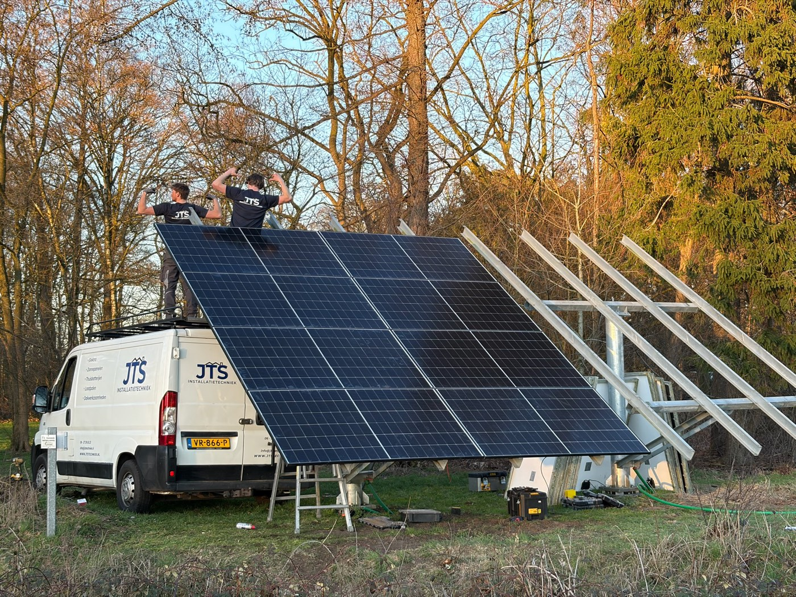
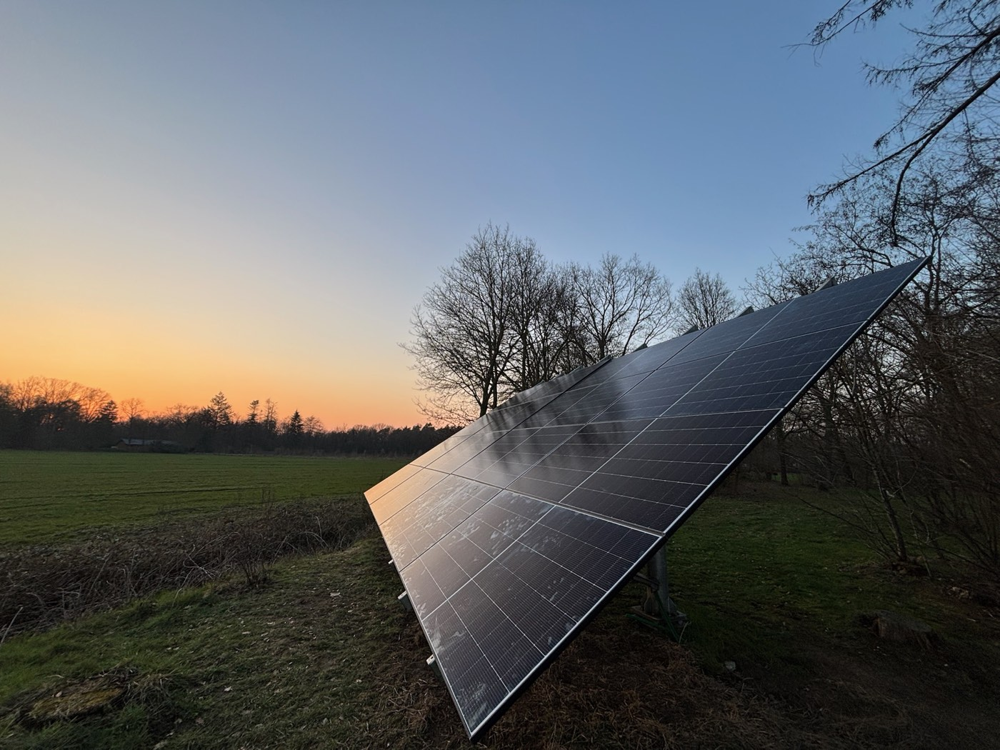
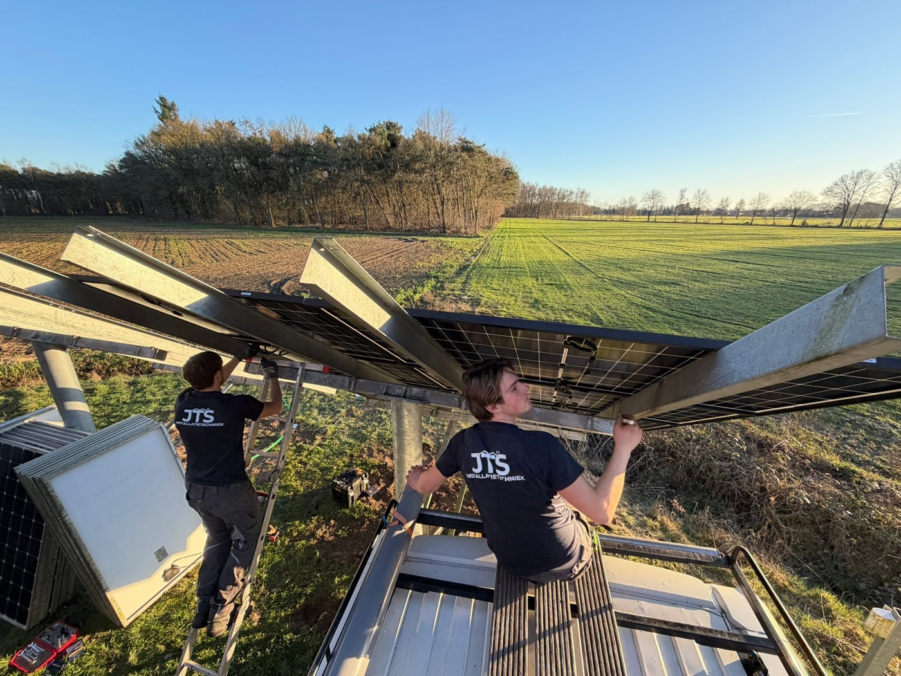
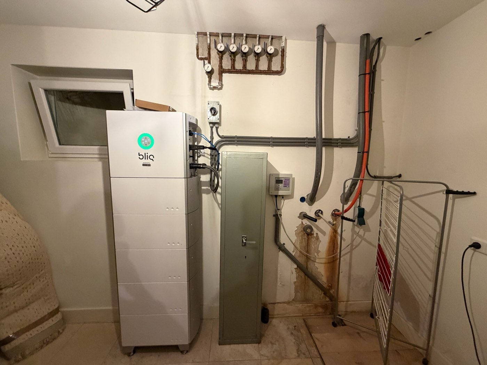
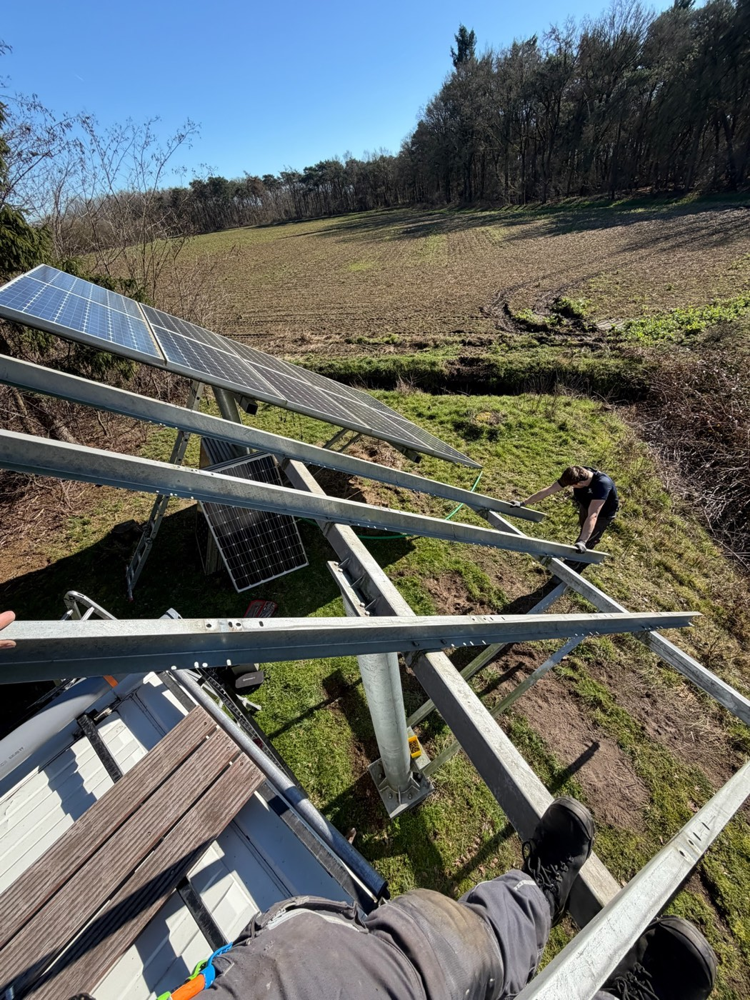
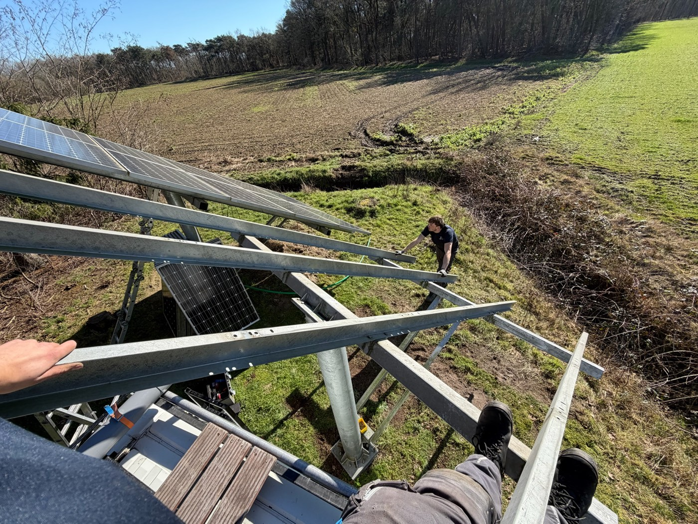
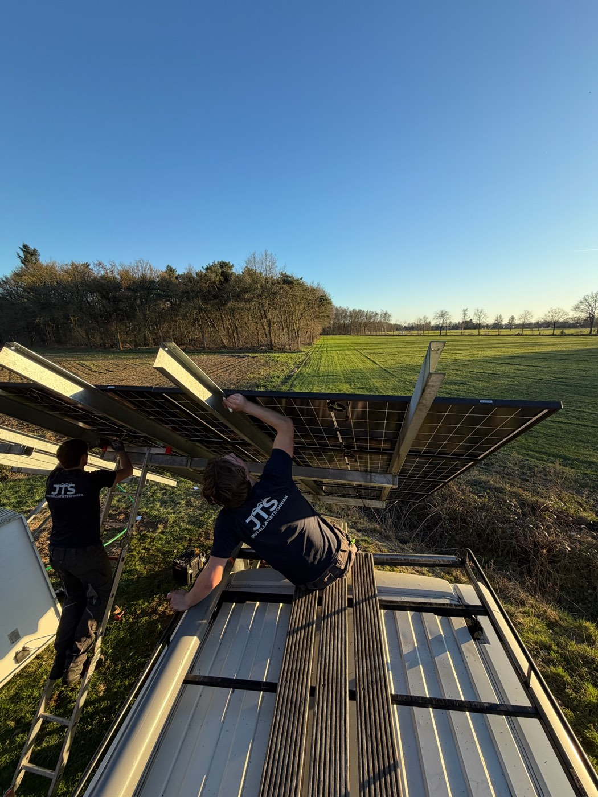
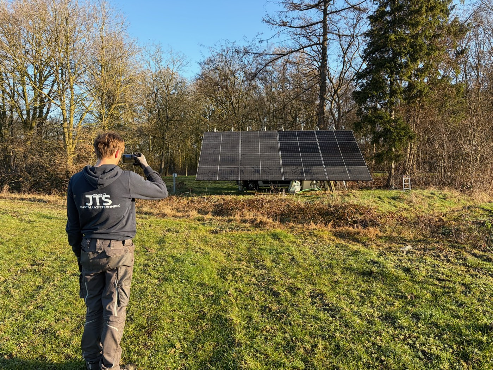
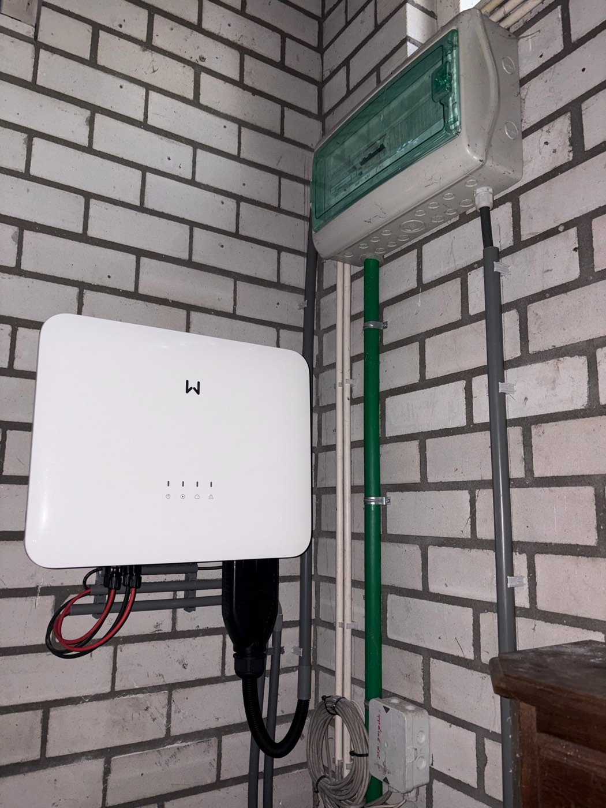
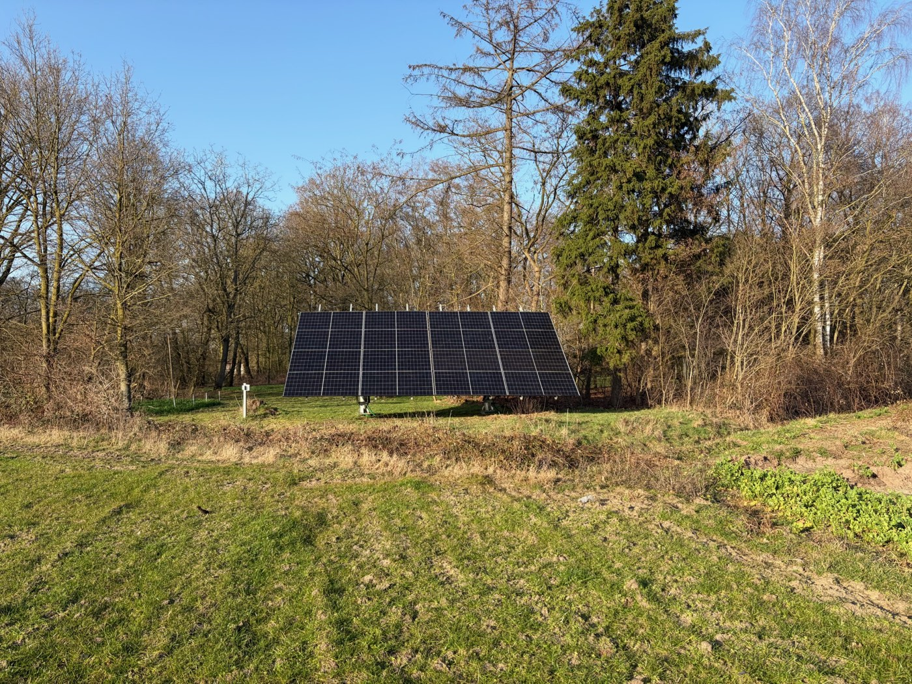
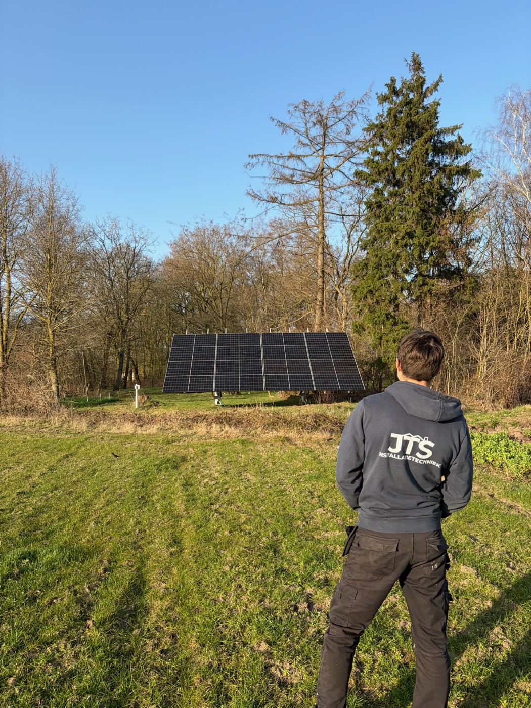
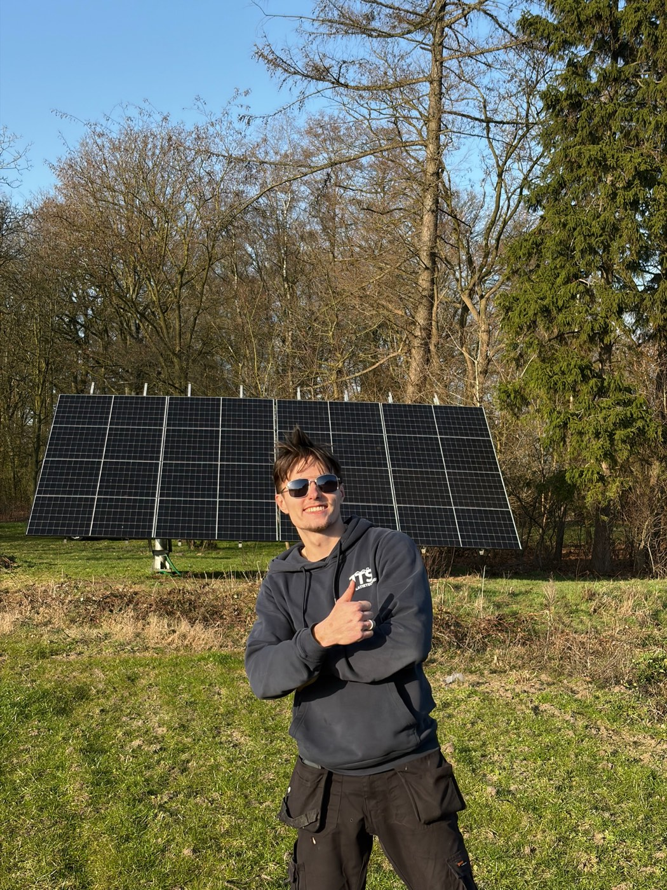
De klant in Lage Mierde had al zonnepanelen op een bestaande grondopstelling, maar niet het rendement dat hij ervan verwachtte — met nieuwe panelen op dezelfde plek is dat nu veel hoger. In overleg is gekozen voor vervanging in plaats van een lapmiddel: de verouderde panelen eraf, en 16 nieuwe panelen van 535 Wp ervoor terug — op dezelfde constructie, aan de rand van het bos en uit het zicht vanaf de woning. Een dakopstelling was hier sowieso geen optie.
De bestaande meterkast was in prima staat en is behouden; we hebben de nieuwe installatie daarop aangesloten in plaats van alles overnieuw te doen. Waar het kan hergebruiken we wat goed is — dat scheelt de klant onnodige kosten.
De grondopstelling zelf stond er al, met de oude panelen erop. JTS Installatietechniek heeft die verwijderd en vervangen door 16 nieuwe JA Solar-panelen van 535 Wp, goed voor 8.560 Wp aan opwekvermogen. Omdat de nieuwe panelen net andere afmetingen hadden dan de oude, is de bestaande constructie aangepast naar de huidige vorm — zonder nieuwe gaten in het gegalvaniseerde staal te boren, want dat vraagt weer om een extra roestbehandeling. De rest is op maat gemaakt om de panelen goed vast te krijgen: echte metaaltechniek. Ook de oude omvormer is vervangen, door een GoodWe.
Binnen, naast de behouden meterkast, staat nu een AC-gekoppelde Bliq-thuisbatterij van 25 kWh. Aangestuurd wordt de batterij door Jullix EMS — en dat is meer dan een batterij die simpelweg zonnestroom bewaart voor de avond, wat elke gewone batterij ook kan. Jullix houdt ook de actuele stroomprijzen in de gaten en stuurt de batterij daarop: opladen wanneer stroom goedkoop is, ontladen of leveren wanneer dat het meest oplevert, met de levensduur van de batterijcyclus in het achterhoofd.
De batterij is bovendien aangesloten als noodstroomvoorziening. Valt het net uit, dan schakelt het huis automatisch over op de eigen opgeslagen energie:
De installatie draait inmiddels al enkele maanden goed, met veel meer rendement dan de oude panelen ooit haalden. In de Jullix-app is precies te zien wat er gebeurt: overdag laadt de batterij op uit de panelen, en zodra de zon weg is levert diezelfde batterij het huis weer van stroom — met nauwelijks nog een piek van het net. Wat je in onderstaande grafiek niet ziet: op de achtergrond houdt Jullix ook rekening met de actuele stroomprijs, niet alleen met wat er op dat moment wordt opgewekt.
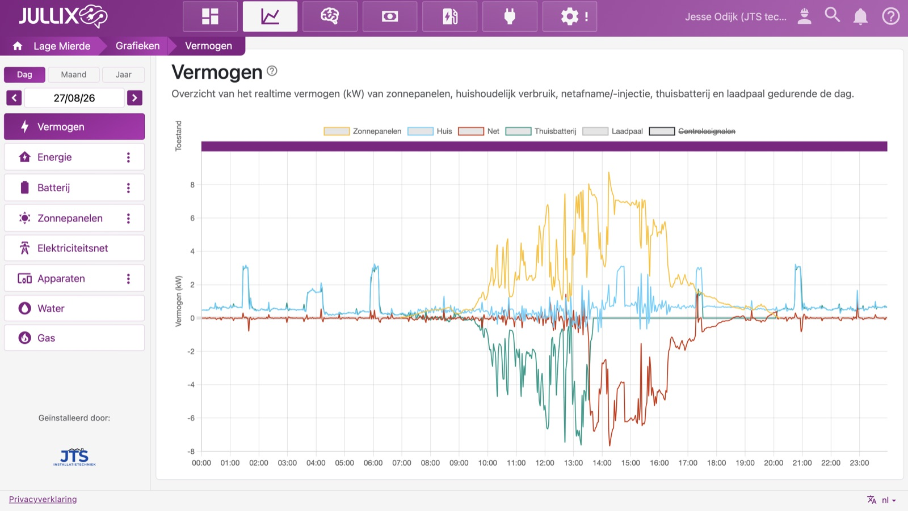
Van verouderde panelen met tegenvallend rendement naar een aangepaste grondopstelling met eigen opslag — precies zoals meer huishoudens in Lage Mierde en De Kempen hun energierekening naar beneden brengen.
Ja, in veel gevallen kun je de bestaande constructie hergebruiken in plaats van een nieuwe te bouwen. Bij dit project in Lage Mierde stond de stalen constructie er al, met verouderde panelen erop. Omdat de nieuwe panelen net andere afmetingen hadden, is de bestaande constructie aangepast in plaats van vervangen — zonder nieuwe gaten in het gegalvaniseerde staal te boren, wat weer een extra roestbehandeling zou vragen. Dat scheelt materiaal, tijd en dus kosten.
Een AC-gekoppelde thuisbatterij hangt via een eigen omvormer aan het stroomnet van het huis, los van de omvormer van de zonnepanelen — zoals de Bliq in dit project. Dat maakt ’m eenvoudig achteraf toe te voegen aan een bestaande installatie, precies wat hier nodig was: de zonnepanelen en de omvormer waren al vervangen voordat de batterij erbij kwam.
Voor de meeste huishoudens is 10 tot 20 kWh thuisbatterij voldoende; 25 kWh is ruim en past bij een hoger verbruik of de wens om vrijwel het hele avond- en nachtverbruik zelf op te vangen. Bij dit huishouden in Lage Mierde vult de 25 kWh Bliq-batterij zich overdag met het overschot van de 16 panelen (8.560 Wp) en levert diezelfde stroom ’s avonds en ’s nachts weer aan het huis — zichtbaar in het Jullix-dashboard hierboven.
Jullix EMS stuurt een thuisbatterij op basis van de actuele stroomprijs: opladen wanneer stroom goedkoop is, ontladen of terugleveren wanneer dat het meest oplevert, met de levensduur van de batterijcyclus in het achterhoofd. Een gewone batterij bewaart zonnestroom alleen voor eigen gebruik in de avond — nuttig, maar dat kan iedere batterij. Bij een dynamisch energiecontract levert de aansturing van Jullix, boven op de besparing van eigen verbruik, nog een extra voordeel op.
Ja, een AC-gekoppelde thuisbatterij kan ook als noodstroomvoorziening dienen. Bij dit project in Lage Mierde schakelt het huis bij een stroomstoring automatisch over op de eigen opgeslagen energie in de Bliq-batterij: verlichting, koelkast, router en cv blijven gewoon werken, en overdag vullen de panelen de batterij weer aan — ook tijdens een langere storing.
Zoiets in gedachten voor uw eigen situatie in Lage Mierde of de rest van De Kempen? Vraag gratis advies aan — we kijken vrijblijvend mee.